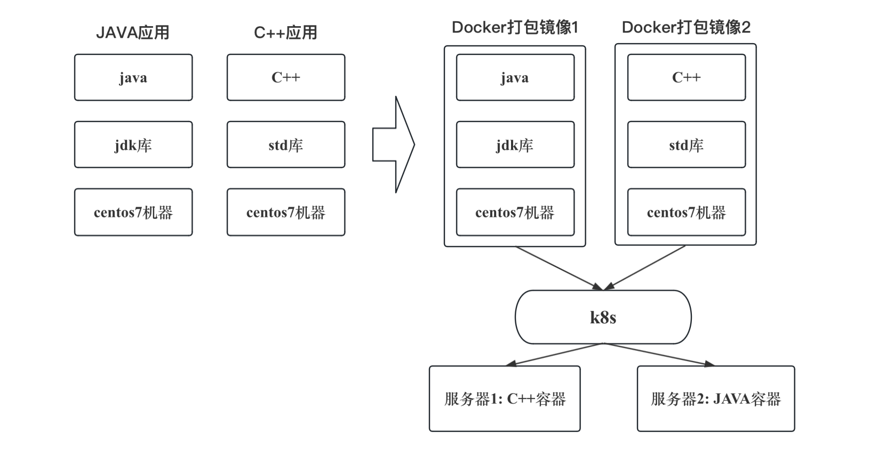

第一章-技术架构
单机架构
简介
所有的服务都部署到一台服务器上。
简单来说，就是全部都放在一台服务器上。
出现原因
在互联网初期，使用量有限，一个单机服务器架构就能够满足要求。
技术案例
相关软件：
Web 服务器软件: Tomcat、Netty、Nginx、Apache 等
数据库软件:MySQL、Oracle、PostgreSQL、SQL Server 等
架构优缺点
优势在于配置简便、开销较小，但劣势则在于会面临明显的性能限制，数据库和应用程序会相互争夺资源。
应用数据分离架构
简介
很简单，就是应用服务和数据库服务使用不同的服务器。
注意，数据库和应用之间多了一条线，这条线就是网络。
出现原因
由于资源竞争激烈，单机情况下可能导致网站响应速度减缓。
架构工作原理
DNS返回的是应用服务器的ip，然后应用服务器再去数据库服务里面去找。
优缺点
优点：经济可控性较高，性能比单机模式好，在数据库独立隔离方面表现出色，应用故障不会对数据库造成影响，还具备一定的容错能力。
缺点：硬件投入增加，性能上存在限制，难以应对大规模高并发需求。
应用服务集群架构
简介
引入了负载均衡，应用是以集群方式运作的。
出现原因
一台应用服务器，不能扛得住高并发，高并发的话容易崩。
架构工作原理
如示意图所展示的情景，采用多个应用服务器的布局方案，以减轻高并发压力。
负载均衡的意义：为了解决将用户请求分配到哪个应用服务器的问题，需要引入专用的系统组件来进行流量分发。在实际应用中，负载均衡的范围不仅仅限于应用层，还可以涵盖其他网络层。
同时，负载均衡算法有多种类型，以下是几种常见的简要介绍：
轮询算法（Round-Robin）： 将请求公平地依次分配给不同的应用服务器，确保公正性。
加权轮询算法（Weight-Round-Robin）： 根据服务器性能等因素分配不同的权重，使性能较好的服务器分配更多的请求。
一致性哈希算法： 通过计算用户特征（例如 IP 地址）得到哈希值，根据哈希结果进行请求分发。这种方法的优势在于，相同用户的请求总是被分配给同一台服务器，类似于我们常见的专属客户代表服务。
这种布局的好处在于可以有效地应对高并发情况，确保系统的稳定性和响应速度。
DNS如何做负载均衡呢？
我们知道DNS可以通过域名返回ip地址。
比如我要访问www.taobao.com, 第一次我返回ip1，表示第一个LVS，第二次返回ip2，表示第二个LVS... 以此类推。DNS也可以完成负载均衡的工作了。
优缺点
优势：
保障应用服务的持续可用性：即便某个应用服务器发生故障，整个网站不会因此而崩溃。
具备一定的高性能表现：在无需访问数据库的情况下（如已有缓存数据），能够快速响应大量请求。
具备一定的横向扩展能力：通过横向增加服务器数量来实现系统的扩展。
劣势：
数据库性能成为瓶颈：由于只有一个数据库，当多个用户同时请求数据时，数据库可能会面临性能问题。
数据库是单一服务器的独立架构，缺乏高可用性。
增加运维负担：随着扩展部署，运维任务也增加，需要开发相应工具来解决快速部署的挑战。
需要承担较高的硬件成本。
读写分离/主从分离架构
简介
通过将数据库的读写任务分配到不同的节点上，我们建立了数据库服务器的主从集群。在这个集群中，通常会配置一个主节点和一个或多个从节点，也可以是一个主节点和多个从节点。在这种架构中，主数据库负责处理写操作，而从数据库则专注于处理读操作。
出现原因
数据库成为瓶颈的情况下，特别是在互联网应用中，读操作通常明显多于写操作。这种情况下，数据库因为处理大量读请求而承受巨大压力。因此，我们可以将读写操作分离，以应对这一挑战。
架构工作原理
如果是写操作，就访问主数据库，然后更改完之后，将数据同步到所有的从数据库中。
如果是读操作，就访问从数据库即可。
这种中间组件常见的有：MyCat、TDDL、Amoeba、Cobar 等
优缺点
优点：
数据库读取性能提升
读取被其他服务器分担，写的性能间接提升
数据库有从库，数据库的可用性能高了
缺点：
热点数据的频繁读取导致数据库负载会很高
当同步挂掉，或者同步延迟比较大时，写库和读库的数据不一致
服务器成本需要进一步增加
冷热分离架构
简介
引入缓存，实行冷热分离，将热点数据放到缓存中快速响应
出现原因
海量的请求导致数据库负载过高，站点响应再度变慢。
架构工作原理
热点数据直接找缓存，不要去找数据库了。
写入的时候缓存和数据库都要写入！而且只能保证同时成功或者同时失败（软件可以做到）
读取的时候，如果缓存中有就直接在缓存中读，如果没有，就去数据库读。
架构优缺点
优势：
明显提升性能：通过分离读写操作，显著减轻了对数据库的访问负担。
缺陷：
引发缓存相关问题：此举可能导致一致性问题、缓存击穿、缓存失效以及缓存雪崩等困扰。
增加服务器开销：实施该策略可能需要投入更多成本用于服务器设备。
业务规模扩大后可能遇到问题：随着业务体量增大，数据量持续增加，可能导致数据库规模过大，单个表数据过于庞大，从而影响查询性能，使数据库再次成为瓶颈。
垂直分库架构（分布式数据库架构）
简介
数据库的数据被拆分，数据库数据分布式存储，分布式处理，分布式查询，也可以理解成分布式数据库架构。
出现原因
上面提到的单机的写库会逐渐达到性能瓶颈，需要拆分数据库，数据表的数据量太大，处理压力太大，需要进行分表，为降低运维难度，业界逐渐研发了分布式数据库，库表天然支持分布式。
架构工作原理
什么是分库分表
如图所示。
分布式数据库架构
优缺点
优点：
数据库吞吐量大幅提升，不再是瓶颈
缺点：
跨库join、分布式事务等问题，需要解决。目前的mpp都有对应的解决方案。
数据库和缓存结合目前能够扛住海量的请求，但是应用的代码整体耦合在一起，修改一行代码需要整体重新发布。
微服务架构
简介
微服务是一种架构风格，按照业务板块来划分应用代码，使单个应用的职责更加清晰，相互之间可以做到独立升级迭代。
出现原因
扩展困难：系统无法轻松扩展，因为每次需要更新应用程序时，必须重新构建整个系统。
持续开发受阻：即使是微小的代码更改，也必须重新部署整个应用，难以频繁、轻松地发布新版本。
不可靠性：即便系统的某个功能出现故障，也可能导致整个系统崩溃。
缺乏灵活性：不支持使用不同的技术构建单一应用程序。
代码维护困难：所有功能都紧密耦合在一起，使得接管这段代码的人难以找到改进的切入点。
架构工作原理
优缺点
优势：
高度灵活性：每个服务都能独立地经受测试、部署、升级和发布。
独立可扩展性：每个服务都能独自进行扩展，不会影响其他服务。
提升容错能力：一个服务出现问题不会导致整个系统崩溃。
劣势：
复杂运维：随着业务的不断发展，应用和服务的数量增多，部署变得更加复杂。
资源需求增加：每个独立运行的微服务都需要占用一定资源。
故障排查难度增加：由于一个请求可能需要多个服务调用，故障排查变得困难，需要查看不同服务的日志来定位问题。
容器编排架构
简介
借助容器化技术（如docker）将服务/应用打包成镜像，通过容器编排工具（如k8s）来动态分发和部署镜像。服务以容器化方式运行。
出现原因
微服务拆分细，服务多部署工作量大，而且配置复杂，容易出错。
微服务数量多扩容麻烦，而且容易出错，每次缩容然后扩容后重新配置服务对应的环境参数信息，很复杂。
微服务至今啊运行环境可能冲突，需要更多的资源来进行部署或者通过修改配置来解决冲突。
架构工作原理


优缺点
优势：
快速部署、轻松运维：使用简单的命令即可完成数百个服务的部署或扩缩容操作。
强大隔离性：容器之间在文件系统、网络等方面具有高度隔离性，避免了环境冲突问题。
便捷滚动更新：通过单一命令实现不同版本的切换，支持轻松的滚动更新。
劣势：
技术栈复杂化，对研发团队的要求较高。
需要自行管理机器资源：在非高峰时段可能需要闲置大量机器资源来备战高峰期，这带来了机器成本和运维成本上的挑战。为解决这个问题，可考虑采购云服务商提供的服务器资源。